La Coerción de datos se refiere a la acción de forzar a que un dato se comporte como
si fuera de otro tipo. Siempre se convertirán en los siguientes tres tipos: String, booleano o
numérico.
ParseInt
Una Función que sirve para manipular datos es parseInt. Esta Función convierte un String
en un number.
parseInt toma únicamente los números enteros.
ej:si le pedimos a un usuario que ingrese su edad, para incrementarla cuando
sea su cumpleaños, podríamos escribir:
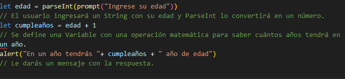
Al hacer un parseInt de la Variable edad se hará la operación matemática en vez de una
concatenación.
Si no usáramos parseInt en este ejemplo, en vez de sumar el valor ingresado por el
usuario, se concatenaría el number "1" al String "36". Mirá este ejemplo:
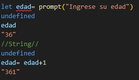
En cambio, pasándole al prompt la Función parseInt, convertirá al valor en un number y
permitirá la operación matemática.
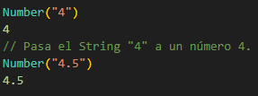
NUMBER
Se usa para convertir un String en un número y admite también los decimales.
Esta Función sólo lee caracteres numéricos. Si le pasamos otro tipo de caracter como
Argumento, nos devolverá la expresión "NaN".
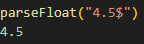
PARSE FLOAT
Convierte un String en un number y admite los decimales. A diferencia de la
Función Number, deja de traducir cuando encuentra un caracter no numérico.
Si el caracter no numérico está previo al número, no lo reconocerá porque
su parseo terminará en ese momento.
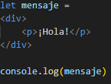
TEMPLATE LITERALS
Los Template Literals son una nueva forma de crear Strings.
Básicamente, son Strings que permiten expresiones y soportan tanto una línea de código
simple como una múltiple.
Los Template Literals permiten escribir texto de varias líneas de una forma más sencilla.
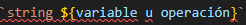
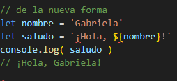
INTERPOLACION STRINGS
Los Template Literals también nos permiten escribir expresiones conocidas como
interpolación de Strings. Esto permite agregar Variables u operaciones dentro de los
Strings.
Interpolar significa poner determinada cosa entre otras que siguen un orden, o dentro del
conjunto que estas forman.
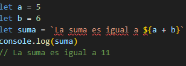
INTERPOLACION STRINGS
en las interpolaciones, también podrás usar expresiones de JS.
Por ejemplo:
SENTENCIA IF
se usa, principalmente, para tomar decisiones. Permite que, si la
condición es verdadera (true), se ejecute un código.
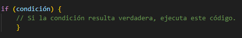
Sin embargo, la Función Condicional más común es if... else. Con esta, nos aseguramos
que, cuando una condición se cumple (es igual a true), retornemos una cosa. Sino (si es
false), retornemos otra.
Sintaxis De La Función if...else:
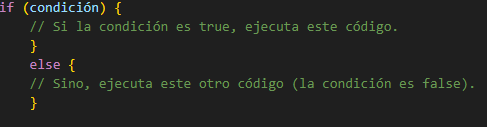
Veamos un ejemplo. Si hiciéramos una app para evaluar a las personas que llegan a una
guardia en un hospital, podríamos escribir el siguiente código que organice la atención de
los pacientes en función de su urgencia:
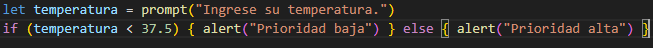
El código se lee y ejecuta de arriba para abajo. Por lo tanto, el orden es muy importante a
la hora de codear, tanto a la hora de declarar Variables como de generar las Estructuras
Condicionales.
Las Estructuras Condicionales de tipo if...else pueden anidarse, unas dentro de otras,
para:
Generar múltiples bifurcaciones en función del objetivo del proyecto.
Mostrar un único camino lógico a cada usuario.
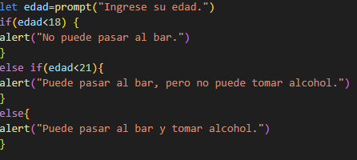
¿QUE TIPOS DE DATOS SON TRUE Y FALSE?
true y false son datos de tipo booleano. Es lo que
resulta de la comparación entre una condición y un
input. Básicamente, determina si se cumple (o no)
la condición para activar (o desactivar) cierta parte
del programa.
Operadores De Comparación En JavaScript
... < ... : Indica que la condición de la izquierda es menor que la de la derecha.
... > ... : Indica que la condición de la izquierda es mayor que la de la derecha.
... >= ... : Indica que la condición de la izquierda es mayor o igual que la de la derecha.
... <= ... : Indica que la condición de la izquierda es menor o igual que la de la derecha.
... == ...: Hace una comparación blanda entre dos valores. Es decir, JavaScript hace una
coerción de datos, para que ambos sean del mismo tipo y pueda compararlos.
...===... : Indica que la condición de la izquierda tiene una igualdad estricta respecto a la
de la derecha. Es decir, evalúa que el contenido y el tipo de dato sea el mismo. Al usar
este comparador evitarás bugs a futuro.
... != ... : Este operador, llamado "diferente de..." o "de desigualdad", permite comparar un
valor con 2, o más, condiciones. Para que la estructura dé como resultado true, todas las
condiciones deben ser diferentes entre sí. Basta con que 1 de las condiciones no sea
diferente para que toda la estructura sea false .
Hay otros operadores en JS que te permitirán armar programas más complejos: los
operadores lógicos y los de desigualdad.
or, and, not
En síntesis, todos los operadores lógicos y de desigualdad retornarán valores booleanos.
La ventaja de usarlos es que permiten agrupar muchas condiciones y refactorizar el
código, haciéndolo más rápido, legible y eficiente.
... || ... : Este operador, llamado "o", permite comparar un valor con 2, o más, condiciones.
Para que la estructura dé como resultado true, alcanza con que solo 1 de ellas se cumpla.
Si ninguna condición es true, la estructura será false.
... && ... : Este operador, llamado "y", permite comparar un valor con 2, o más,
condiciones. Para que la estructura dé como resultado true, todas las condiciones deben
cumplirse. Basta con que 1 de las condiciones no se cumpla para que toda la estructura
sea false .
! niega el valor booleano de cada dato. Es decir que, si es true devolverá false y si es
false, retornará true.
Los datos de JavaScript tienen una naturaleza intrínseca asociada a lo positivo o
negativo. Por ejemplo, el número 0, al indicar ausencia de algo, tiene una naturaleza
negativa. En cambio, el número 1, al indicar presencia, tiene una naturaleza positiva.
De la misma manera sucede con los Strings: uno vacío tendrá una naturaleza negativa
mientras que uno lleno tendrá una positiva.
LOOPS
Los Loops (en castellano, Bucles) son muy útiles. Sirven para repetir una tarea, una
determinada cantidad de veces, hasta que se cumpla una condición dada de antemano.
WHILE
el while Loop se parece a la declaración del if...else ya que ambos evalúan una condición
y ejecutan un bloque de código.
Sin embargo, el while Loop lo re-evalúa repetidas veces y ejecuta su bloque de código
hasta que la condición deja de ser verdadera.
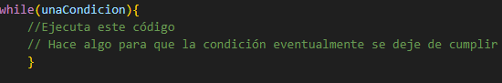
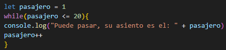
Con este código, podríamos cobrar el boleto a cada una de las 20 personas que estén en
la fila, dejando pasar a quienes paguen, desde el primero hasta el último pasajero.
LOOPS INFINITOS
Los Loops Infinitos ocurren cuando la condición de un while Loop nunca es falsa. Por lo
tanto, el código corre indefinidamente y se cuelga el programa.
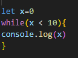
En este código, x es igual a 0 y la condicional dice: "Mientras x sea menor que 10 se debe
mostrar por consola a x".
OPERADORES ARITMETICOS AVANZADOS
Los Operadores Aritméticos Avanzados de JavaScript nos permiten escribir un código más
preciso y con una mejor funcionalidad.
++: Le suma 1 unidad a la Variable.
--: Le resta 1 unidad a la Variable.
+=: Le suma las unidades que querramos a la Variable.
-=: Le resta las unidades que queramos a la Variable.
*=: Multiplica a la Variable por la unidad que queramos.
while Loop Con Cadenas De Caracteres(Strings)
En los while Loop también podemos evaluar condiciones usando cadenas de caracteres
(en inglés Strings).
Los while Loop también pueden evaluar condiciones que sean Strings. Por ejemplo, si
quisiéramos corroborar cuál es la palabra mágica para entrar a La Caverna De Los 40
Ladrones, podríamos escribir estas líneas de código:
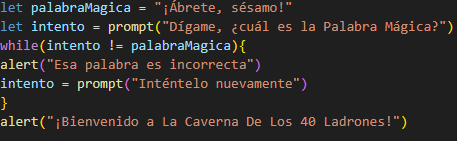
VARIABLES ACUMULADORAS
En este ejemplo vemos un loop que tiene 5 iteraciones, ya que arranca desde el 1 y
termina en el 5. La variable acumuladora va a juntar el valor de la i en cada iteración.
La cuenta acumulador += i se puede escribir también como acumulador = acumulador + i.
Es importante analizar que pasa en cada iteración:
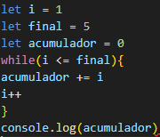
WHILE LOOPS ANIDADOS
Para iniciar al entendimiento de los loops anidados te recomendamos que copies este
código en tu consola y analices el resultado:
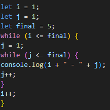
consola 1:
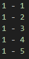
Como podrás observar, el primer while se
mantiene en la iteración número 1 mientras que
el while interno se recorre (a la izquierda esta la i
y a la derecha esta la j):
consola 2:
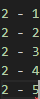
Una vez que termina el while interno de hacer
su recorrido, pasamos a la segunda vuelta del
primer while, en donde la i va a valer 2,
entonces:
consola 3:
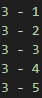
Y así, hasta que termine la última iteración del
while principal, es decir, en la iteración 5,
veamos como sigue hasta el final:
OBJETO MATH
El Objeto Math contiene Propiedades y Métodos relacionados a Matemática. Un gran uso del
mismo es crear números random.
FUNCIONES
Una Función es un bloque de código que nos permite realizar una tarea en particular.
Para que la Función se ejecute, "algo" debe invocarla. Es una herramienta muy útil porque
estiliza el código y lo hace más escalable.
¿POR QUE SON UTILES?
Las funciones nos permiten guardar partes de código en paquetes que podemos volver a
usar.
Las Funciones, inicialmente, deben ser definidas y, luego, deben ser llamadas para que se
puedan ejecutar.
DECLARAR UNA FUNCION
Para ejecutar una Función, primero hay que declararla. En este proceso, se escribe el
bloque de código que se guardará para, luego, ejecutar.
EJEMPLO
Imaginá que querés mostrar por consola el Feliz Cumpleaños. Podrías hacerlo de esta
manera:
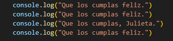
Ahora, si quisieras volver a mostrarlo, tendrías que escribir ese código nuevamente. En
cambio, con una Función, solo tendrías que escribir el código una vez y ejecutarlo cuantas
veces lo necesites:
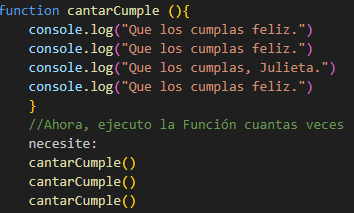
Muchos comandos que venís usando son, en realidad, Funciones que engloban código
nativo de JS.
alert()
console.log()
prompt()
¿QUE ES UN PARAMETRO?
Un Parámetro es una Variable que creamos al momento de definir una Función y, cada
vez que la ejecutamos, le pasamos un argumento(su valor) como input.
Generalmente los terrminos "Parametros y "Argumentos" se utilizan de manera indistinta
para referirse a los datos que le pasamos a la función.
Cuando le pasamos un Parámetro a una Función estamos haciendo un código mucho
más escalable.
Volviendo al ejemplo del Feliz Cumpleaños, podríamos variar el nombre del cumpleañero
usando un Parámetro. Si bien es factible declarar varias Funciones, una por cada persona
(como cantarCumpleClaudia, o cantarCumpleElon, etc.), optimizaríamos el código de esta
manera:
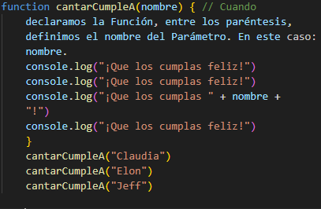
Veamos otro ejemplo de una Función que utiliza Parámetros:
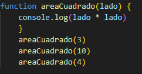
Funciones Con Múltiples Parámetros
Podemos ejecutar las Funciones pasándoles todos los Parámetros que necesitemos.
Sintaxis De Las Funciones Con Múltiples Parámetros:
Debemos separar los Parámetros con una coma. Mirá este ejemplo:
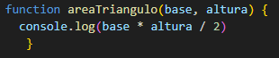
¿Qué sucede si dejamos un Parámetro sin definir? Probá este ejemplo en tu consola:
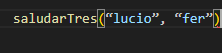
¿Y si le pasamos Argumentos de más? Comprobá qué sucede en tu consola:
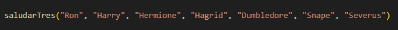
PARAMETROS POR DEFAULT
Los Parámetros Por Default permiten que los Parámetros de una Función sean definidos
con un valor inicial.
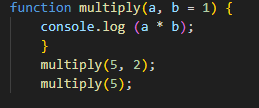
KEYWORD RETURN
La keyword return se usa al declarar una Función para devolver un valor específico de
ella. Esto sucede para guardar ese valor en una Variable o usarlo por fuera del bloque de
definición de la Función.
EJEMPLO SIN RETURN
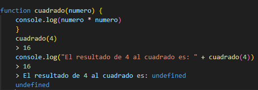
En este código, el resultado de la operación se muestra por consola. Sin embargo, al no
usar return ese valor no puede reutilizarse y, por lo tanto, se imprime undefined.
EJEMPLO CON RETURN
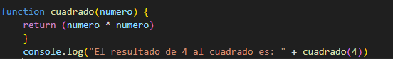
Con el keyword return tomamos el resultado de la operación para, luego, reutilizarlo y
lograr que la Función nos devuelva el valor del cuadrado de un número.
EL ALCANCE DE LA VARIABLE EN JAVASCRIPT
El alcance (en inglés scope) de una Variable indica cuán disponible estará cuando se la
invoque. Las Variables Globales son aquellas que están accesibles en todo el bloque de
código de un programa.
En cambio, las Variables Locales son accesibles solo en el ámbito de la Función donde
fueron declaradas.
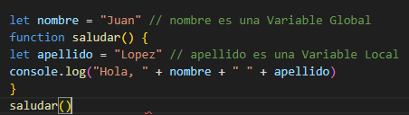
Cuando ejecutemos la Función saludar, la consola nos devolverá como resultado los valores
guardados tanto en la Variable nombre como apellido. Esto sucede porque la Variable nombre es
Global y apellido es Local dentro de la Función que estamos ejecutando.
Sin embargo, en caso de que quisiéramos seguir avanzando en nuestro código para crear una Función
despedir, que reutilice ambos valores, la consola nos devolverá un error porque la Variable apellido
no está definida dentro de la Función despedir:
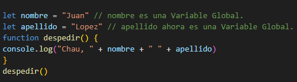
manipulacion de DOM
¿que es el dom?
El browser construye una representación del documento HTML que se llama Document Object Model (DOM).
En este sentido, el DOM lo organiza en forma de nodos y Objetos que tienen Propiedades y métodos. Tendrá la siguiente forma:
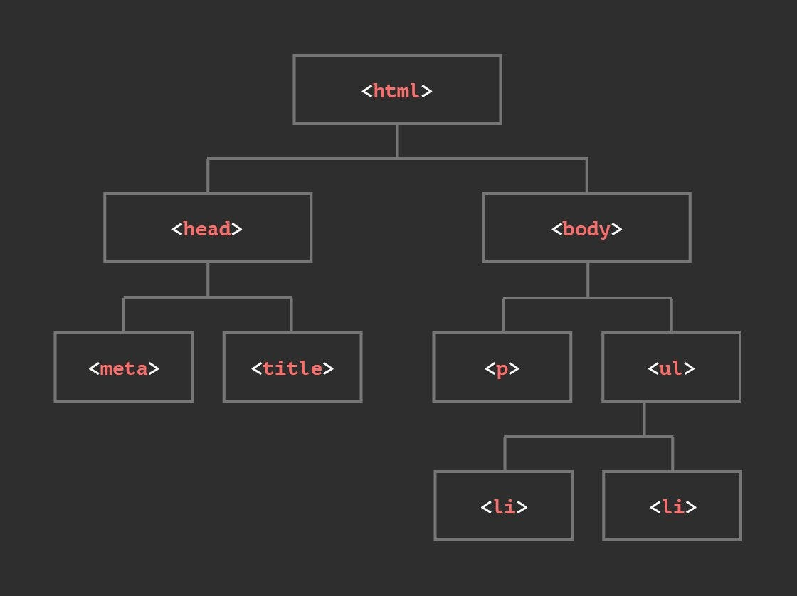
Esencialmente conecta las páginas web a los scripts o lenguajes de programación. Es decir, el DOM representa todo el contenido del documento HTML y permite que el script de JavaScript interactúe con él. Cuando buscamos un término en el campo de búsqueda de Google y se despliegan las opciones de búsqueda más frecuentes, esto sucede gracias a la interacción del código JavaScript con nuestro documento HTML (representado por Objetos) a través del DOM.
¿Como se manipula?
Como vimos, el DOM es la interfaz entre JavaScript y HTML+CSS.
Es decir, cuando cargamos un documento HTML+CSS en el browser, el DOM convierte
cada tag en un Objeto de JavaScript. Esto permite que el script manipule los elementos
HTML+CSS como si fueran Objetos.
¿Cómo accedemos al objeto de JavaScript?
si escribimos el codigo: document.
Nos va a mostrar el código HTML. Sin embargo, esto no muestra el verdadero Objeto.
Para acceder, deberíamos escribir:
console.dir(document)
Dentro de este Objeto podemos encontrar una gran cantidad de Propiedades y métodos.
Como manipular los elementos
Podemos seleccionar los elementos HTML desde la consola y, luego, acceder a sus
Propiedades para modificar sus valores a través del comando querySelector.
Para seleccionar un elemento desde la consola (o desde el script), debemos escribir
document.querySelector()
document.querySelector(): Es uno de los métodos para seleccionar un elemento.
Devuelve solo el primer elemento que coincida con el selector CSS dado. El término
“Query Selector” viene del inglés “consulta por selector”.
Ejemplo
// Función para cambiar el texto del párrafo
function cambiarTexto() {
// Obtener el elemento del párrafo por su ID
var parrafo = document.getElementById("miParrafo");
// Cambiar el texto del párrafo
parrafo.textContent = "¡El texto ha sido cambiado!";
}
Como manipular el estilo
Si quisiéramos modificar las Propiedades de un documento, podríamos seleccionar un
elemento con un querySelector y, luego, modificar su estilo. Sin embargo, esto es poco
escalable.
La alternativa más práctica es definir una Clase con todas las propiedades CSS y aplicarla
usando JavaScript. Para eso, usaremos una propiedad llamada classList, en la que
seleccionamos un elemento y le agregamos una Clase determinada pasándola como
valor.
Ejemplo
function cambiarColorFondo() {
// Obtiene el elemento de párrafo por su ID
var parrafo = document.getElementById("miParrafo");
// Cambia el color de fondo del párrafo
parrafo.style.backgroundColor = "red"; // Puedes usar cualquier color
}
Como manipular el texto y contenido
Además de manipular los estilos, podemos manipular los textos del HTML. Para eso,
usaremos las Propiedades textContent (del inglés “contenido de texto”) y innerHTML.
Importante: La propiedad textContent es para todos los elementos o tags HTML que
muestren texto (h1, span, p).
Veamos un ejemplo. Si quisiéramos modificar el texto presente en h1 ("primer h1!"),
primero definimos la Variable y luego utilizamos textContent:
let h1 = document.querySelector("h1")
h1.textContent = "¡Hola!"
Manipular los atributos de un elemento
El método getAttribute() nos devuelve el valor del atributo especificado. Con el método
setAttribute() definiremos un valor para el atributo.
Supongamos que tenemos el siguiente tag:
< a href="https://github.com/" id="btn-google">Ir a Google< /a>
Por ahora el link nos lleva a “https://github.com/”, pero queremos modificarlo por
“https://getbootstrap.com/”. Para hacerlo, primero debemos usar el método querySelector desde
JavaScript:
let botonGoogle = document.querySelector("#btn-google");
botonGoogle.getAttribute("href") // Nos muestra cuál es el valor del atributo href.
botonGoogle.setAttribute("href", "https://getbootstrap.com/") // Cambia el valor del
atributo href por el valor que se pasa como segundo Parámetro.
manipular muchos elementos
Para seleccionar varios elementos al mismo tiempo, existe el método querySelectorAll()
querySelectorAll() devuelve un Node list (lista de nodos) de todos los elementos que
coincidan con el selector.
Si utilizamos querySelector("a"), solamente nos trae el primer link
En cambio, querySelectorAll("a") nos devuelve una lista de nodos con todos los elementos de este tipo
Tambien se puede agregar y remover los elementos.
Para agregar un elemento dentro de otro usaremos el método appendChild. De esta
forma, podemos incluir en un nodo un nuevo hijo.
Y para remover un elemento de nuestro sitio web, usamos el método removeChild.
Eventos
que es un evento
Los Eventos son acciones que activan los cambios que realiza JavaScript en los sitios
dinámicos. Gracias a esto, el DOM va a "escuchar" (listen) qué hace el usuario y activar
cierta parte del código, en base a cierto estímulo.
Vamos a usar el método eventListener (del inglés “escuchar el Evento”).
Para agregar un Evento, usamos addEventListener().
function funcion_boton(){
console.log("¡Alguien hizo click en el boton!")
}
document.querySelector("button").addEventListener("click", funcion_boton)
En este ejemplo, el primer argumento del método addEventListener() es un String ("click")
que indica el tipo de Evento que se estará "escuchando". El segundo argumento es una
Función denominada callback. Es una Función que no corre inmediatamente, sino que depende de otra cosa (el Evento del clickdel usuario).
Tipos de eventos
Existen muchos Eventos distintos en JavaScript. Por ejemplo, los de Animación, los de
Llamada, los de Formulario, etc.
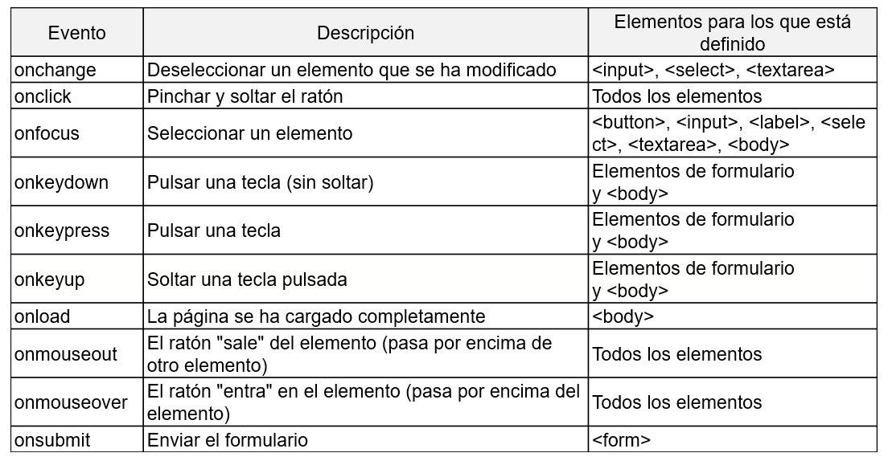
Podemos agregar Eventos a varios elementos al mismo tiempo a través de la palabra
reservada this.
Eventos: mouseover Y mouseleave
mouseover: Se activa cuando el mouse se pone sobre el elemento o alguno de sus descendientes.
mouseleave: Se activa cuando el mouse sale del elemento (y sus descendientes).
Si quisiéramos que el fondo cambiara a amarillo cada vez que el cursor se pose sobre el elemento (y se desactive cuando ya no está posicionado), podríamos usar mouseover y
mouseleave:
Cada vez que se dispara un Evento, el browser genera un Objeto JavaScript con
información muy valiosa que recaba un eventListener: qué tipo de Evento fue, a qué hora
se generó, en qué posición estaba el mouse, si el usuario hizo click, etc.
Para poder acceder a él, debemos pasarle como argumento una Función Anónima que
luego podamos loguear en la consola. Incluso, podemos acceder al valor de cualquiera de
las Propiedades guardadas en él para, por ejemplo, reutilizarlo.
para acceder a este Objeto JavaScript, debemos capturarlo como argumento dentro de la
Función callback y para acceder a la información del Evento, usá Dot notation (como con cualquier Objeto).
Propiedad .button
Indica si algún botón del mouse está siendo clickeado o no cuando
ocurrió el Evento. En caso afirmativo, dará 1; sino, 0.
Aplicado esto al ejemplo anterior, podríamos escribir el siguiente código:
document.body.addEventListener("mousemove", function(infoEvento) {
console.log("El mouse está en X: " + infoEvento.clientX + " Y: " +
infoEvento.clientY)
console.log("Está siendo clickeado:" + infoEvento.button)
})
Eventos disparado por teclado
Podemos hacer que se activen ciertas acciones a partir de una tecla presionada. Por
ejemplo, podés asociar una tecla a un sonido o imagen. Esto sirve para lograr una mayor
interacción con el usuario.
se produce al presionar cualquier tecla. Por ejemplo, si
presionamos la tecla "Shift" y la tecla "a" al mismo tiempo, se producen dos Eventos.
El Evento keyup se produce al soltar la tecla presionada. Es decir, cada tecla presionada
(y soltada) disparará un nuevo Evento.
El Evento keypress también se produce al presionar una tecla. A diferencia del Evento
keydown, si presionamos